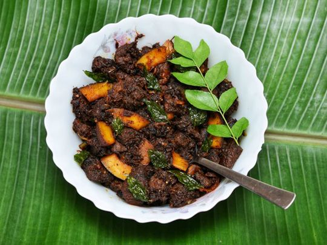

BEEF ULARTHIYATHU

Description
Kerala, my hometown is quite famous for its natural beauty, greenery, backwaters… and also for its food. Like every Keralite, “Beef Ularthiyathu” or “Beef Dry Roast” is one of my all-time favourite Kerala delicacies. It is a tasty and spicy traditional recipe from Kerala, India. It is an indispensable dish for Kerala Christians.
The dishes origins can be traced back to AD 52, after which Syrian Christians have been known to have settled in Kerala due to St. Thomas the Apostle, one of the 12 disciples of Jesus, is said to have landed here in AD 52, which prompted their arrival. However the first Jewish settlers arrived in Kerala as early as AD 7, and brought with them kosher cattle slaughter techniques, which could have also led to the development of the recipe.
The dish is prepared by cooking chunks of meat in a mixture of spices which include turmeric, coriander, garam masala, meat masala, black pepper and red chilli, cooked along with onions, green chilli and ginger-garlic paste. Coconut slices, fried in coconut oil and curry leaves are also used for garnish.
Ingridents
- 2½ lb beef
- 25 shallots (thinly sliced)
- 2-3 green chilies (slit)
- 1 tbsp ginger garlic paste
- ¼ tbsp turmeric powder
- 1 tbsp red chili powder
- 1½ tbsp coriander powder
- 2 tbsp pepper powder
- 1 tsp meat masala
- ½ tsp garam masala
- 4-6 sprigs curry leaves
- ¼ cup coconut bites
- a pinch of mustard seeds
- salt (as required)
- oil (as required)
Steps
- Clean and cut beef into cube shaped pieces (preferably soup cut).
- Cook the beef in a pressure cooker with salt, pepper powder, meat masala, and a little water just enough to cover the meat. Pressure cook for 2 whistles and then remove the cooker from the flame. Allow it to rest until the pressure goes off. Keep aside.
- Heat oil in a pan and splutter mustard seeds. Add curry leaves, sliced shallots, green chilies, and a little salt. Saute until the onions turn translucent.
- Add ginger garlic paste, saute for a minute until the smell resides.
- Add spice powders; chili, coriander, turmeric, garam masala, and mix well. Make sure to turn the heat to a low while adding the spice powders, so that it does not burn.
- Remove the lid from the pressure cooker and transfer the cooked beef with the remaining water to the pan, mix well with the masala and cook on a medium flame until the gravy dries out. Stir the gravy occasionally while cooking, to prevent it from sticking to the bottom of the pan. Add salt as needed.
- Meanwhile, heat a little oil in another pan and fry the coconut bites. As it starts to brown, add curry leaves and fry it along with the coconut bites until browned. Keep aside.
- When the gravy dries out, reduce the flame to a low and saute the beef in the pan for 10-15 minutes. Add the fried curry leaves and coconut bites, and mix well together. Scrape the sides of the pan, toss until the meat is brown -black and dried out completely.
- Serve hot with Rice, Porotta, Appam, Naan, or any other bread.
Home